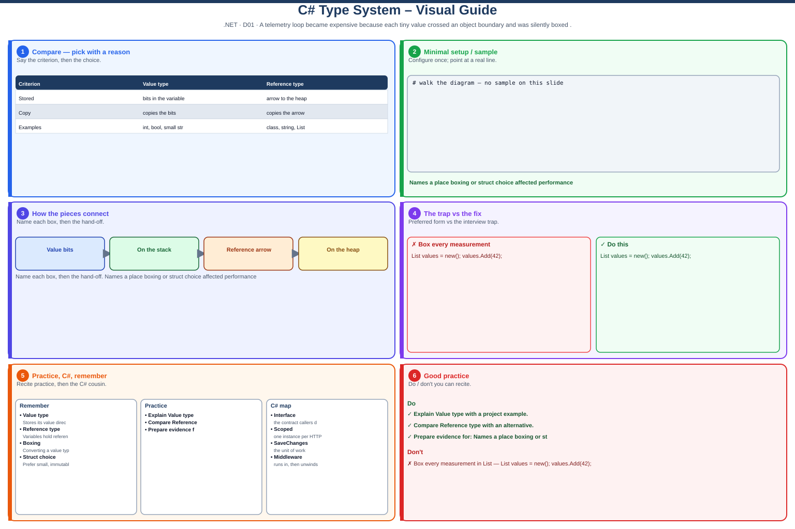

int, bool, DateTime, small structs) stored directly in the variable (the bits live with the variable). Reference types (class, string, List<T>) are more complex objects on the heap — the variable stores the starting address (an arrow) to that object, so two variables can share one object.Definition
int, bool, DateTime, small structs) store their bits directly in the variable. Reference types (class DTOs, string, List<T>) store the starting address (an arrow) of a heap object — so two variables can point at the same box.- Value types:
int,bool,DateTime,struct— assignment copies the bits (independent copies). - Reference types:
classDTOs,string,List<T>— assignment copies the address/reference (same object). - Boxing: putting a value into
object(or untyped SQL param) allocates on the heap — avoid on busy schedule/payment APIs. - struct vs class: small immutable value →
struct; shared mutable appointment/patient DTO across layers →class.

Decision flowchart
Read from the top. If the answer is YES, stop at that box. If NO, go down.
Picture — where the data lives
Value types keep the bits in the variable. Reference types keep a pointer; the object is on the heap.
Value type — int a = 10
┌─────────────┐
│ a │ 10 │ ← value lives here
└─────────────┘
┌─────────────┐
│ b │ 10 │ ← copy of 10
└─────────────┘
b = 99 → only b changes
Reference type — var r = new[]{1,2}
┌──────┐ ┌──────────┐
│ r1 ●─┼───────▶│ [1, 2] │
└──────┘ └──────────┘
┌──────┐ ▲
│ r2 ●─┼───────────────┘ same object
└──────┘
r2[0]=99 → r1 also sees 99
One-line memory: value = copy the number · reference = copy the arrow (both arrows can point at one box).
Quick pick (project)
Use value / struct when…
- Small fixed data (Point, Money)
- Copying is OK / wanted
- No shared mutation across layers
Use class when…
- DTO shared Controller → DA → Ok()
- Nullability + mutable fields
- Appointment / patient identity
My project: class DTOs + typed SqlParameter (avoid boxing).
Boxing in one glance
Boxing allocates. Prefer List<int> over old ArrayList of ints.
Step-by-step (beginner friendly)
- Step 1 — Value vs reference (with before/after)
A value type variable holds the bits. A reference type holds an arrow to one heap object — two variables can share the same DTO/list.
❌ Value typeint a = 10; int b = a; // COPY value b = 99; // a is still 10✔ Reference typevar list1 = new List<int> { 1, 2 }; var list2 = list1; // COPY arrow list2.Add(3); // list1.Count is 3 — same list# INPUTint a = 10; int b = a; b = 99; Console.WriteLine(a); // 10 var list1 = new List<int> { 1, 2 }; var list2 = list1; list2.Add(3); Console.WriteLine(list1.Count); // 3# OUTPUT (same line as each WriteLine)10 3Takeaway: value = copy the number · reference = copy the arrow.
- Step 2 — Boxing on SQL parameters (before/after)
Boxing = store a value type inside
objecton the heap (allocates). On hot API paths we avoid the untyped parameter API.❌ Before// BEFORE — Add takes object → boxes int int patientId = 42; cmd.Parameters.Add("@PatientId", patientId); // int → object (heap alloc every call)✔ After// AFTER — typed SqlParameter + SqlDbType int patientId = 42; cmd.Parameters.Add( new SqlParameter("@PatientId", SqlDbType.Int) { Value = patientId }); // SQL type declared as Int up frontHow this avoids the boxing problem- Trigger: anytime an
intmust becomeobject, the CLR boxes it (heap copy). - Before:
Add(name, patientId)expectsobject→patientIdis boxed on every SQL call in schedule/payment DA. - After: build
SqlParameter(..., SqlDbType.Int)first. You tell ADO.NET “this is SQL Int,” instead of handing a bareobjectinto the collection. - Why it matters: less GC pressure on busy APIs + correct SQL type (no AddWithValue guessing).
BEFORE: int ──box──▶ object ──▶ Add(name, object) AFTER: int ──▶ SqlParameter(SqlDbType.Int) ──▶ SQL INT# INPUTint n = 42; object boxed = n; // boxing int back = (int)boxed; // unboxing Console.WriteLine(back);# OUTPUT (same line as each WriteLine)42Project line: typed SqlDbType on schedule/payment parameter binding = avoid object-add boxing on the hot path.
- Trigger: anytime an
- Step 3 — struct vs class for DTOs (before/after)
Use
classwhen the same appointment/patient object is passed and updated across Controller → DA → API response. Usestructonly for small immutable values.❌ Beforepublic struct ScheduleAppointmentDto { ... } // each layer gets a COPY✔ Afterpublic class ScheduleAppointmentDto { public int AppointmentId { get; set; } public string PatientName { get; set; } } // shared instance across layers# INPUTreadonly struct Money { public decimal Amount { get; } public string Currency { get; } public Money(decimal amount, string currency) => (Amount, Currency) = (amount, currency); } var fee = new Money(9.99m, "USD"); var copy = fee; Console.WriteLine(copy.Amount); class Order { public int Id { get; set; } } var o1 = new Order { Id = 1 }; var o2 = o1; o2.Id = 99; Console.WriteLine(o1.Id); // 99# OUTPUT (same line as each WriteLine)9.99 99Takeaway: DTO across layers →
class; tiny immutable value →struct. - Step 4 — Nullable value types (before/after)
Optional SQL columns should use
int?/DateTime?, not magic zeros orMinValue.❌ BeforeDateTime end = DateTime.MinValue; // “missing?”✔ AfterDateTime? end = reader["EndTime"] as DateTime?; if (end is null) { /* missing */ }Takeaway:
?on value types = true missing without a reference type.
Skill matrix D01 — value vs reference, boxing, struct vs class. (Project angle from MyDotnet: SqlParameter + appointment DTOs.)
Quick reference
| Kind | Examples in my API | Assignment does… |
|---|---|---|
| Value | int PatientId, DateTime, bool | Copies the bits |
| Reference | ScheduleAppointmentDto, string, List<T> | Copies the arrow (same object) |
1. Value vs reference — full example
What it means: a value-type variable is the data. A reference-type variable holds a pointer to one heap object — so two names can share one DTO.
Why it matters in my project: Controller, DA, and API response all touch the same
ScheduleAppointmentDto instance. If it were a struct, each layer would get a copy
and updates would not travel together.
Takeaway: value = copy the number · reference = copy the arrow.
2. Boxing — full example (SqlParameter)
What it means: boxing wraps a value type in an object on the heap
(allocation + copy). Unboxing casts it back.
Why it matters in my project: if you pass int/DateTime as plain
object into SQL parameters, .NET boxes them on every call. On busy schedule/payment APIs
that is extra GC pressure. Typed SqlParameter + SqlDbType is the fix we use in DA.
SqlParameter avoids the boxing trap
- Boxing trigger: a value type (
int,DateTime) must live inside something typed asobject→ CLR allocates a heap box and copies the bits. - Before (bad path):
Parameters.Add("@PatientId", patientId)uses an overload that takesobject. Yourintis therefore boxed on every call before it even reaches SQL. - After (good path): create the parameter with an explicit SQL type first —
new SqlParameter("@PatientId", SqlDbType.Int). ADO.NET already knows “this is an Int column,” so you are not stuffing a mysteryobjectinto the collection. - What you gain: no untyped object-add boxing on the hot DA path; correct SQL type
(
Int/DateTime) instead ofAddWithValueguessing; less GC pressure on busy schedule/payment APIs. - Same idea elsewhere: prefer
List<int>overList<object>— generics keep the value asintand never box.
Picture of the call:
Level-3 line: “I avoid boxing on SqlParameter hot paths by using SqlDbType — I never pass int/DateTime as plain object into Add.”
3. struct vs class — full example (DTO choice)
What it means: struct = value semantics (copied).
class = reference semantics (shared identity, mutation, inheritance).
Why it matters in my project: appointments/patients are mapped from SqlDataReader
into class DTOs — mutated and passed across Controller → DA → API response.
A struct would copy at each hop and break shared updates / nullability patterns.
| Choose | When | Project example |
|---|---|---|
class | Shared mutation, nullability, across layers | ScheduleAppointmentDto |
struct | Small immutable value, copy is OK | Point, Money amount |
4. Nullable value types — short example
What it means: int? / DateTime? can be “no value” without using a reference type.
Useful for optional SQL columns (appointment end time may be null).
Self-check quiz
var b = a where a is a class DTO, do both names share one object?
Show answer
class DTOs across Controller → DA → response.int patientId into a SQL parameter?
Show answer
SqlParameter("@PatientId", SqlDbType.Int) { Value = patientId } — not an untyped object add.ScheduleAppointmentDto a struct?
Show answer
My project story (from MyDotnet.md)
How: In API Data Access, SqlParameter values and DTO properties mix value types (`int`, `DateTime`) and reference types (`string`, `List<>`). Mapped `SqlDataReader` columns into classes (reference) rather than structs because appointments/patients are mutated and passed across layers.
Why: Avoid unnecessary boxing when binding parameters; keep DTOs as classes for nullability and shared mutation in schedule/payment flows.
Self rating: 3 (Expected TA: 3)
Excel / assessor talking points
- Level-3 asks: show where boxing or struct vs class affected performance.
- In my project API Data Access layer, I read data using SqlDataReader from stored procedures.
- I map each row into a class DTO (Data Transfer Object) — reference type — for appointments and patients.
- I use class instead of struct because the same object is passed and updated across Controller → DA (Data Access) → API response.
- For SQL parameters, I use typed SqlParameter (SqlDbType.Int, SqlDbType.DateTime).
- If I pass int/DateTime as plain object, .NET boxes them — extra memory allocation on busy schedule/payment APIs.
- Example: new SqlParameter("@PatientId", SqlDbType.Int) { Value = patientId };
- Result: less boxing overhead and stable shared DTOs (Data Transfer Objects) in production code.
Q: Where did boxing or struct vs class matter in your project?
A: Typed SqlParameter (SqlDbType.Int/DateTime) avoids boxing ints/dates as object on busy APIs. Appointment/patient DTOs are class because they are mutated and shared across layers — a struct would copy and break shared updates.
Q: What is boxing?
A: Converting a value type to object (or an interface) — allocates on the heap and copies the value. Prefer generics and typed parameters.
Q: When would you choose struct over class?
A: Small immutable value semantics (Point, Money) with no shared mutation. For DTOs across Controller → DA → response, use class.
Practice
- Explain value vs reference with a list / DTO example (before vs after copy)
- Show typed
SqlParametervs boxing intoobject - Defend class DTO vs struct for appointments/patients across layers
- Use
DateTime?for an optional SQL column instead of MinValue
value copy: x=1, y=5 reference: r1[0]=99, r2[0]=99 boxed then unboxed: 7
Syntax-colored view
| 1 | // Runnable demo — value vs reference + boxing |
| 2 | // (top-level statements — paste into SharpLab and Run) |
| 3 | |
| 4 | int x = 1, y = x; |
| 5 | y = 5; |
| 6 | Console.WriteLine($"value copy: x={x}, y={y}"); |
| 7 | |
| 8 | var r1 = new[] { 1, 2 }; |
| 9 | var r2 = r1; // same array |
| 10 | r2[0] = 99; |
| 11 | Console.WriteLine($"reference: r1[0]={r1[0]}, r2[0]={r2[0]}"); |
| 12 | |
| 13 | int n = 7; |
| 14 | object o = n; // boxing |
| 15 | int m = (int)o; // unboxing |
| 16 | Console.WriteLine($"boxed then unboxed: {m}"); |